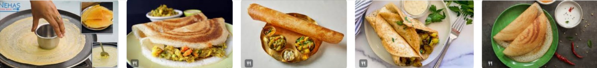

My favourite food - "Dosa"
Dosa is my favourite food.
It is hot and crisp with a stuffing of potatoes in it.
Nowadays, dosa has many varieties, such as plain dosa, masala dosa, paneer dosa and so on.
It is made with rice batter.
It is served hot with 'sambhar' and 'coconut chutney'.
Dosa is the most popular dish of southern India and now it is a widely famous dish all over India.
